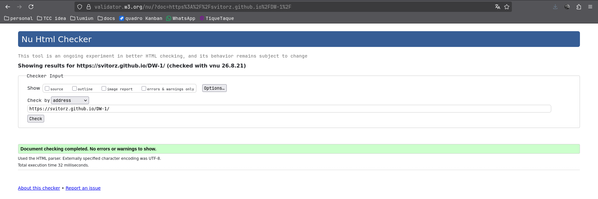
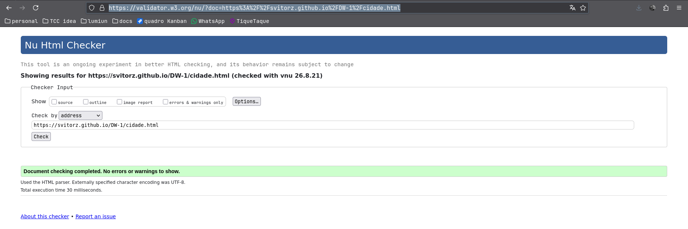
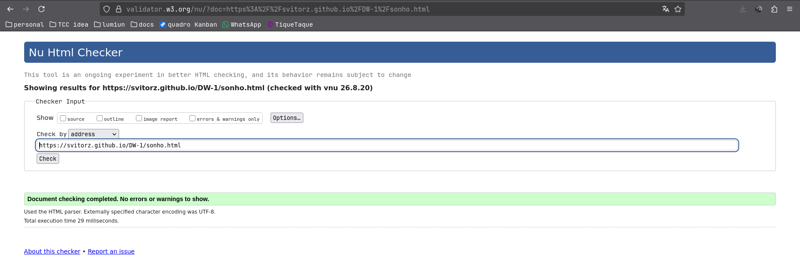
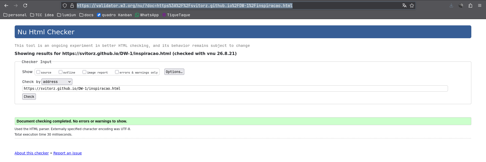
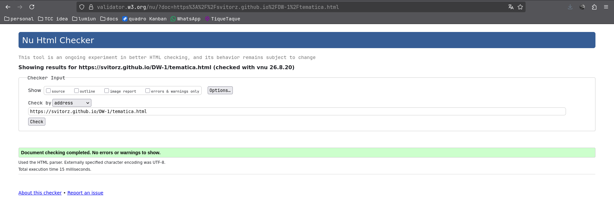

Página inicial

Páginas semânticas aprovadas pelo W3C Nu Validator.
As imagens abaixo são registros dos resultados aprovados pelo validador para cada página da atividade “Meu Site Pessoal”.




